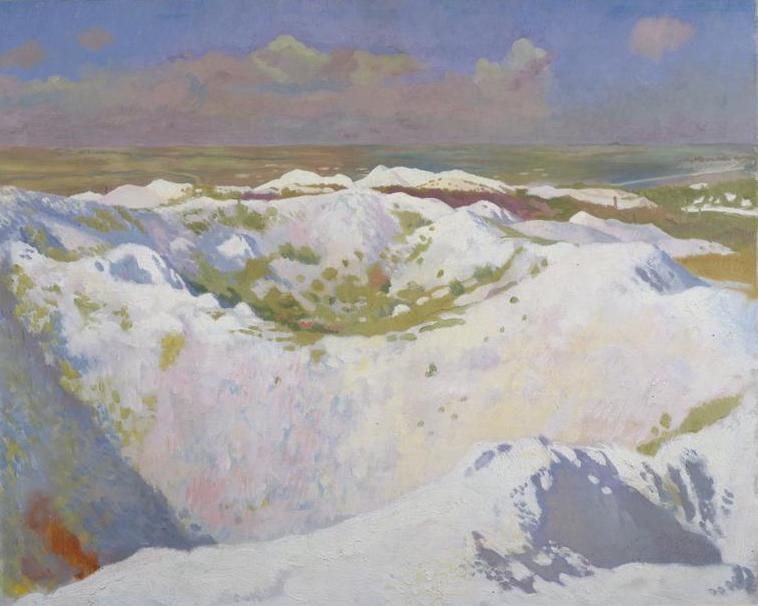
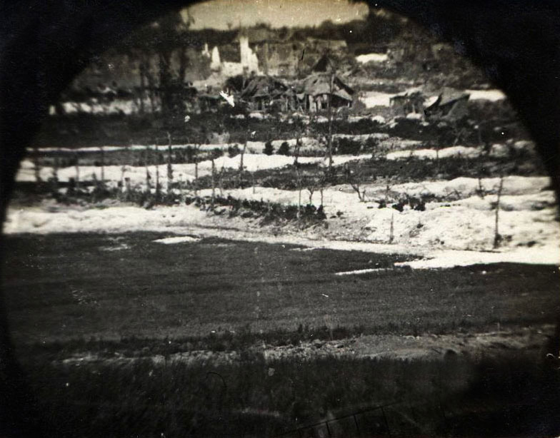
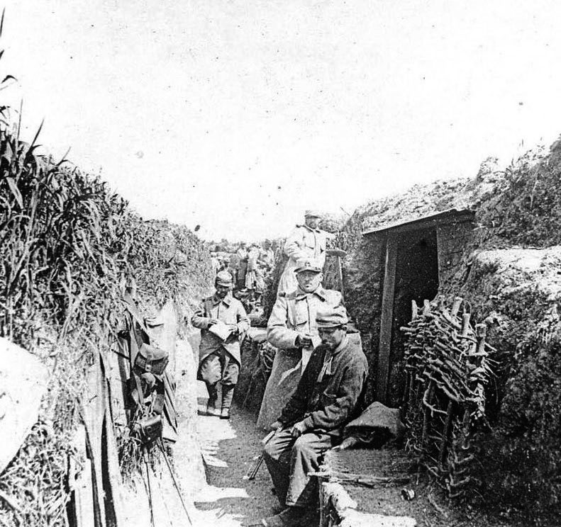

Fighting first broke out in the village of La Boisselle on 28 September 1914 when the 64th and 137th French Infantry Regiments stopped the advance of the German troops towards the town of Albert. Most of the houses, including a farm located along the Contalmaison Road, were then fortified by the 119th and 120th Wurtenburg Regiments. After several unsuccessful attacks, the French troops captured the farm on Christmas Eve.

Collection Guy François
At the beginning of the year, a violent battle started inside the Gribauval farm in ruins. Surface attacks and bombardments were the daily life of the soldiers. But no significant ground was captured, and mining operations started underground. At several places, the Germans dug deeper than the French and used explosive charges of up to 3,000 kg. No man's land was reduced to a continuous line of mine craters along a 400 metre stretch.

Collection Guy François
At the end of July, the British troops definitively took over the Somme area from the French Army. Battalions 1/6 and 1/7 of the Black Watch were sent into the îlot trenches. Underground, men of the 179 Tunnelling Company took over from the French miners. The tunnellers started to dig new entrances to create a new underground system below the îlot. The German miners undertook a devastating underground offensive at the end of the year.
Preparations for the battle of the Somme began to the east and west of the îlot with the digging of two large mine chambers. The îlot was too dangerous to organise any attacks. On 1st July, at 7:28, the tunnellers blew up the charges in the Lochnagar and Y tunnels, and two smaller mines under the îlot. At 7:30, the 34th British Division launched the offensive, but quickly failed to take the village. La Boisselle was only captured three days later.